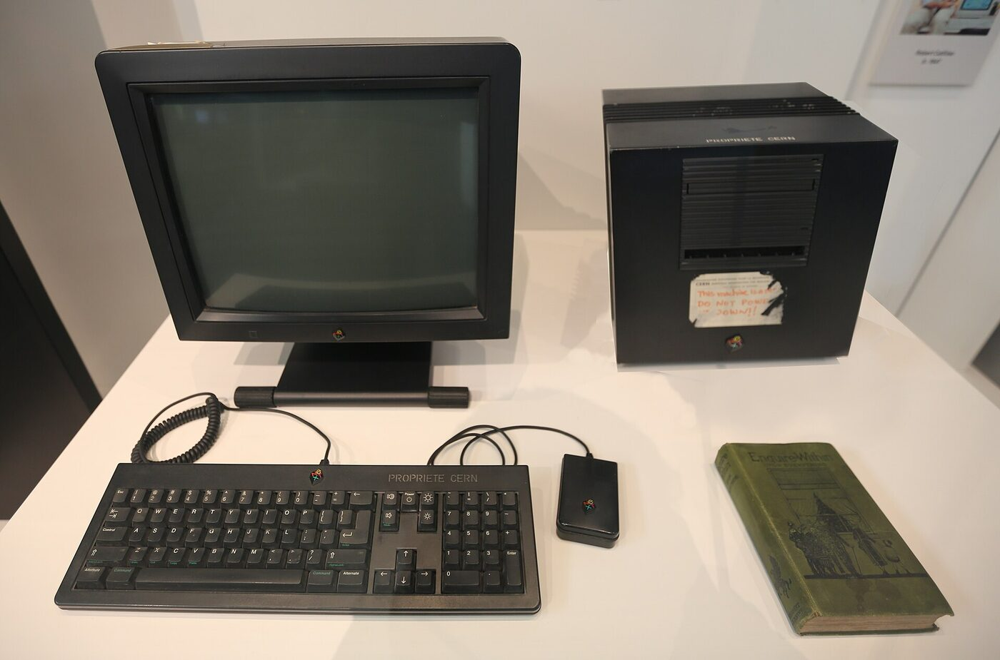
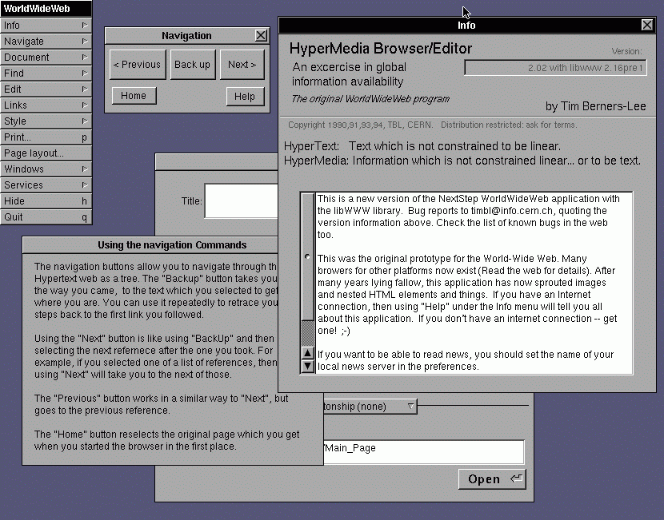
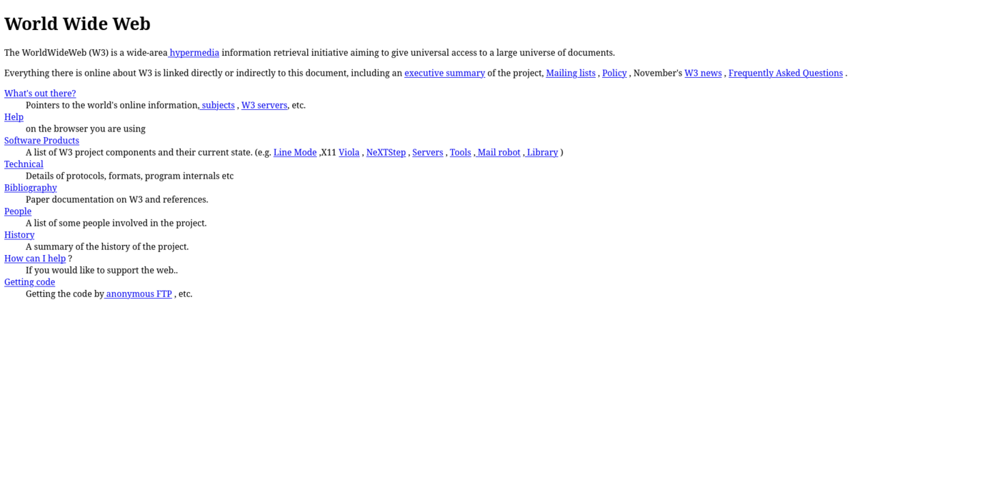
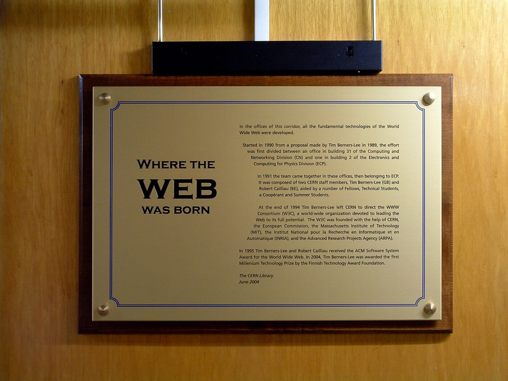
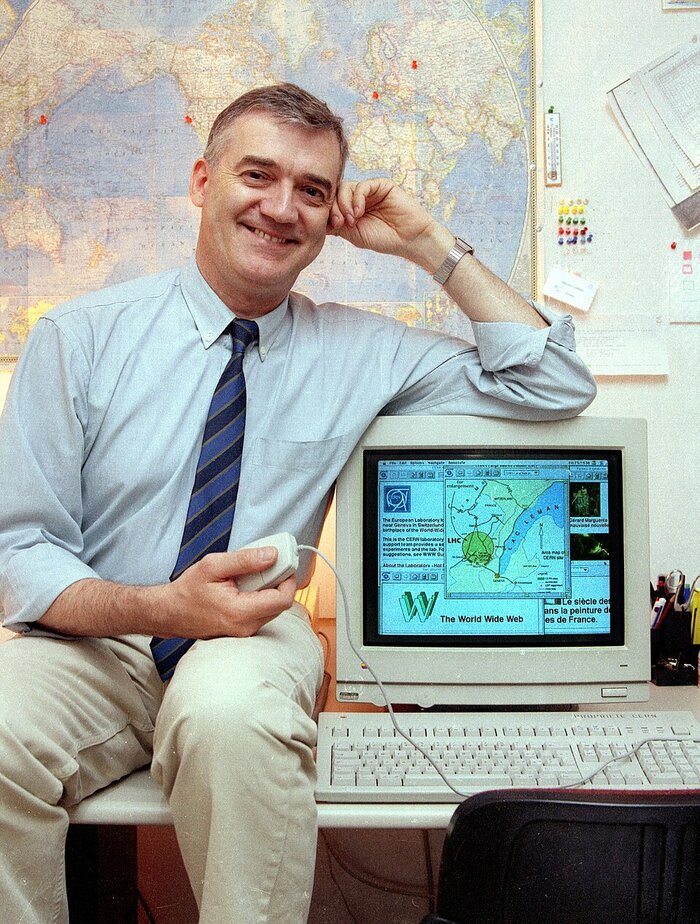

Web Design · Pioneers · History of Computing
Tim Berners-Lee
Tim Berners-Lee (born 1955) is the English computer scientist who invented the World Wide Web while working at CERN, the European physics laboratory near Geneva. In about eighteen months he wrote the three ideas every website still depends on (addresses, a way to ask for pages, and a language to write them in), built the first browser and the first server, and then persuaded CERN to give it all away so that anyone could build on it without permission or payment.
Who Is Tim Berners-Lee?

Timothy John Berners-Lee was born in London on 8 June 1955. Computers were already part of family life: both his parents, Mary Lee Woods and Conway Berners-Lee, were mathematicians who worked on the Ferranti Mark 1, one of the first computers ever sold. He grew up with model railways and electronics, and studied physics at Queen's College, Oxford, graduating in 1976. While at Oxford he built his own computer from a soldering iron, spare logic chips, and an old television set.
In 1980 he spent six months at CERN as a contract software engineer. To keep track of who worked on what, and which program connected to which, he wrote himself a small program called ENQUIRE, which stored notes as pages joined by links. It was never published, but the idea stayed with him: information is easier to find when it is connected the way people think, not filed in one big tree.
He returned to CERN in 1984. Thousands of scientists were passing through, on dozens of incompatible computer systems, and information was constantly lost when people left. In March 1989 he wrote a short memo, Information Management: A Proposal, describing a web of linked documents that would work on any computer. His manager, Mike Sendall, wrote three words on the cover: "Vague but exciting…" and quietly gave him time to try it.
With his colleague Robert Cailliau, he refined the plan in 1990. By Christmas that year he had written the first web browser (which could also edit pages), the first web server, and the first website, all running on a NeXT computer in his office. In August 1991 he announced the project publicly on an internet discussion group and invited anyone to join in. He has spent the rest of his career trying to keep the web open, first as founder of the World Wide Web Consortium (W3C) and later through work on privacy and people's control of their own data.
Where the Web Was Born
Select any picture to enlarge it. Ask of each one: what does this object tell us about how small the web was at the start?











A Life Building the Web
- 1955 Born in London on 8 June to two mathematicians who worked on the Ferranti Mark 1 computer.
- 1976 Graduates in physics from Queen's College, Oxford, having built a computer from an old television.
- 1980 Writes ENQUIRE at CERN, a private program that links notes together like pages.
- March 1989 Writes Information Management: A Proposal; his manager notes "Vague but exciting…" on the cover.
- 1990 With Robert Cailliau, revises the proposal; by December the first browser, server and website run on his NeXT computer.
- August 1991 Announces the World Wide Web on the alt.hypertext discussion group and invites the world to use it.
- April 1993 CERN puts the web's software in the public domain: anyone may use and build on it for free.
- 1994 Founds the World Wide Web Consortium (W3C) at MIT to agree open standards for the web.
- 2004 Knighted by Queen Elizabeth II for services to the global development of the internet.
- 2012 Appears at the London Olympics opening ceremony, typing the message "This is for everyone."
- 2017 Receives the 2016 ACM A.M. Turing Award, computing's highest honour, for inventing the web.
- 2018 Launches Inrupt to develop Solid, a way for people to keep their own data and choose who may use it.
Three Small Ideas, Given Away
The internet already existed in 1989. Computers could send each other files and email. What was missing was a simple way to publish a document so that anyone, on any kind of computer, could find it and follow a link from it to the next document. Berners-Lee's answer was three pieces, each deliberately simple:
One line that says how to fetch a document and where it lives: http://info.cern.ch/hypertext/WWW/TheProject.html.
A short, plain-text conversation: the browser says GET and a path; the server sends the file back.
Ordinary text with tags that say what each part is: a heading, a paragraph, a link to another page.
None of these was hard to build. What made them powerful was that they were open: the rules were published, anyone could write a browser or a server that followed them, and nobody had to ask permission. Hypertext, text with links in it, had been tried before in closed systems. The web worked because it was the first one everyone was allowed to join.
The link on the first website looked almost exactly like this. Every link you have ever clicked is the same idea.
Why give it away?
In 1993 the University of Minnesota announced it might charge licence fees for Gopher, a rival way of publishing documents online. Developers began avoiding it. Berners-Lee pushed CERN to declare that the web's software was free for anyone to use, and on 30 April 1993 it did. He has said that if the web had been owned and charged for, it would never have taken off. He could have become very rich; instead the web became the shared platform that companies, schools and students could all build on.
Is the web the same thing as the internet?
Was the first browser just for reading?
Is the page on info.cern.ch the original from 1990?
Restyle the First Website
Below is the real HTML of the earliest surviving copy of the first website, exactly as CERN still serves it. It uses some tags modern pages no longer write (<HEADER>, <NEXTID>), capital letters, and NAME= numbers on every link. Your browser still reads all of it. That is the web keeping its oldest promise: old pages keep working.
- Predict: the page has no CSS at all. What will it look like?
- Run: press 1992: no CSS, then try each modern style.
- Change: edit the CSS yourself. Can you make it look like a page you would want to read today, without touching the HTML?
Notice: every preset changes only the CSS. The HTML, the meaning of the page, never changed. Berners-Lee designed HTML to say what things are and leave how they look to the reader's browser; CSS, proposed by his CERN colleague Håkon Wium Lie in 1994, made that split official. Try the same thing on your own site in Design with CSS.
Berners-Lee's Key Contributions
Designed URLs, HTTP and HTML, the three standards every web page still uses, and combined them into one working system.
Wrote WorldWideWeb, a browser that could also edit pages, and the first web server software, both in 1990.
Pushed CERN to release the web royalty-free in 1993, so anyone could build browsers, servers and sites without paying.
Founded the World Wide Web Consortium in 1994, where companies and the public agree on how HTML, CSS and accessibility rules work.
"The power of the Web is in its universality." Under his leadership the W3C published the accessibility guidelines your own site is tested against.
Through the Web Foundation and the Solid project, he argues that people, not platforms, should control their personal data.
Berners-Lee's Legacy Today
There were about 10 websites at the end of 1992. Today there are well over a billion. Every one of them, including the site you build in this course, still uses his URLs, still speaks HTTP, and is still written in HTML. Your browser can open the 1992 page above because the web's standards were designed to grow without breaking what came before.
He is also one of the web's most outspoken critics. He has warned that a few large companies now control much of what people see, that personal data is collected without real consent, and that misinformation spreads easily. His answer is the same as in 1993: keep the web open, keep it something anyone can build on, and give people control. When you publish your own site from your own folder, under your own name, you are using the web the way it was meant to work.
Keep going: How the web works follows one HTTP request step by step, and Set up your first site has you write your own HTML file.
Sources
- CERN, "The birth of the Web" and "A short history of the Web."
- Tim Berners-Lee, "Information Management: A Proposal" (1989), W3C archive.
- The earliest surviving web page, restored by CERN: info.cern.ch.
- Tim Berners-Lee, Weaving the Web (1999), on ENQUIRE, the proposal, and the decision to give the web away.
- ACM, "Sir Tim Berners-Lee, 2016 A.M. Turing Award."
Practice Problems
Think about the proposal, the three standards, and why the web is free.
Easy1. Where was Berners-Lee working when he invented the World Wide Web?
Easy2. Which three standards did Berners-Lee design for the web?
Medium3. Berners-Lee wrote his proposal in March 1989 and announced the web publicly in August 1991. About how many years passed?
Medium4. What is the difference between the internet and the web?
Challenge5. Why did CERN releasing the web royalty-free in 1993 matter so much?
Medium6. In the restyling lab, which file did every preset change?
Challenge7. The first browser, WorldWideWeb, could do something most later browsers could not. What?
Easy8. In 2012 Berners-Lee typed a short message at the London Olympics opening ceremony. What did it say?